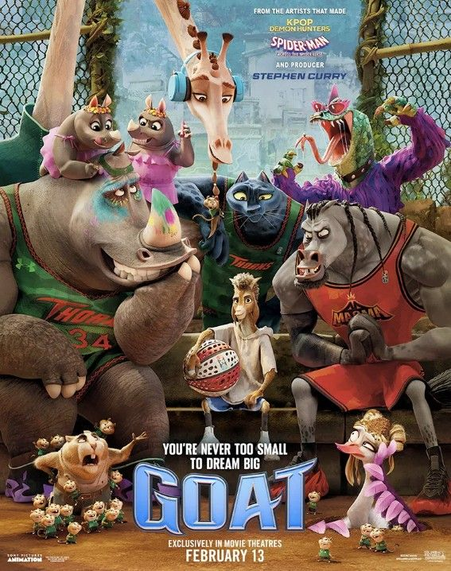

Journey 01 · Timișoara Note 8 of 11 Field Note
The Coolest in the Parking Lot
Or: Of course it’s in English
I love going to the movies.
It’s the popcorn. The seats. The theater full of people sharing an experience but not having to actually talk to any of them (my introverted dream). The loudness of the sounds, the oversized screens…
I love movie theaters.
And when I saw that there was a movie I wanted to see – GOAT, an animated adventure film about a goat and basketball (And probably life, because all basketball movies also seem to be about life), I was eager to go and see it.
I checked the theater showing times on my auto-translated webpage, scanning the details. The English title of GOAT had been translated as The Coolest in the Parking Lot, which I thought was an interesting choice. “IN: DUB (ENG)” What else could that possibly mean, except dubbed in English. Obviously.
Clear, logical, settled. I went to the theater with confidence.
I bought the tickets from a machine that was in the default language of Romanian. Not a problem, I have learned to find the Limba button and choose British English.
I stood in line to buy popcorn, too delighted by the popcorn bucket being closable with handles (genius!) and having the option for salt, cheese or “sweet and spicy” flavor to notice that everything was written only in Romanian.
I settled in. The lights dimmed.
And then the animated animals began speaking in rapid, un-subtitled Romanian. Not English. Not with English subtitles. Just 100 minutes of cartoon chaos and life lessons delivered at a rapid pace with cartoonish exaggeration.
Of course it’s not in English
Of course it was in Romanian. I am in Romania. Why would it be in English?
The arrogance was not in the theater; it was in my assumption. I had translated the words, but not the context.
Somewhere between purchasing the ticket and watching a goat shout passionately about something I could not decipher, I realized the problem wasn’t vocabulary, it was perspective.
“IN: DUB (ENG)” did not mean English was the default. It meant the film was dubbed from its original English into Romanian.
WHICH, in hindsight, is EXTREMELY reasonable. And also aligned with how all the other film showtimes were listed, with their country of origin noted and whether they were SUB or DUB.
I stayed for the movie. At first, I tried to decode every sentence, seeking the words I knew from Duolingo and approximately five minutes of Romanian language class. That lasted about three minutes.
Eventually, I surrendered and started watching differently, paying attention to tone, gesture, timing, and animation. I let the laughter of the children in the room tell me what visual gags translated, and which did not. I did not understand the dialogue, but I did understand the plot.
Turns out, you can follow a story without having the language for what you are experiencing.
I could feel the community of the cafe regulars where the titular goat grew up watching the community basketball team. I laughed at the new-found family scenes where a literal Uno-reverse moment flipped an entire card game. By the time the black panther made her dramatic reconciliation speech to her multi-species teammates, I was in tears
I left the theater with some new knowledge:
One, I should never again assume I know what “DUB (ENG)” means.
Two, sometimes humility is the price of a movie ticket.

Originally published at fieldnotesfromabroad.com/2026/03/03/the-coolest-in-the-parking-lot/